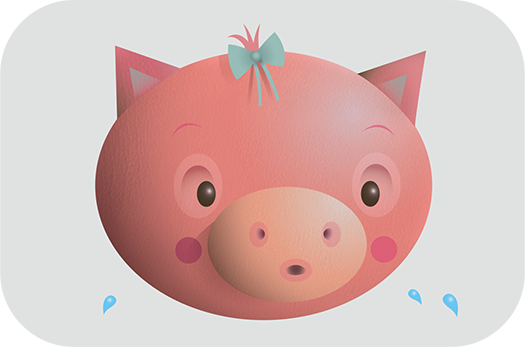

-

Leather: Animals Abused And Killed for Their Skins
Every year, the global leather industry slaughters more than a billion animals and tans their skins and hides. Many of these animals endure all the horrors of factory farming—including extreme crowding and confinement, deprivation, and unanesthetized castration, branding, tail-docking, and dehorning—as well as cruel treatment during transport and slaughter.
-

Aquariums and Marine Parks
Wild orcas and dolphins live in large, complex social groups and swim vast distances every day in the open ocean. In captivity, these animals can only swim in endless circles in tanks that are the equivalent of bathtubs, and they are denied the opportunity to engage in almost any natural behavior. They are forced to perform meaningless tricks and often torn away from family members when they’re shuffled between parks. Most die far short of their natural life spans.
-

The Pork Industry
Almost all of the millions of pigs killed for food in the U.S. every year are raised on crowded, filthy factory farms before they’re shoved and prodded onto trucks bound for slaughter.
-
Down Production: Birds Abused for Their Feathers
The coldhearted and cruel down industry often plucks geese alive in order to get their down—the soft layer of feathers closest to a bird’s skin. These feathers are used to produce clothing and comforters, but for geese, the down industry’s methods are anything but comfortable.
-

Hunting
Hunting might have been necessary for human survival in prehistoric times, but today most hunters stalk and kill animals merely for the thrill of it, not out of necessity. This unnecessary, violent form of “entertainment” rips animal families apart and leaves countless animals orphaned or badly injured when hunters miss their targets.
-
Mice and Rats in Laboratories
More than 100 million mice and rats are killed in U.S. laboratories every year. They are abused in everything from toxicology tests (in which they are slowly poisoned to death) to painful burn experiments to psychological experiments that induce terror, anxiety, depression, and helplessness.